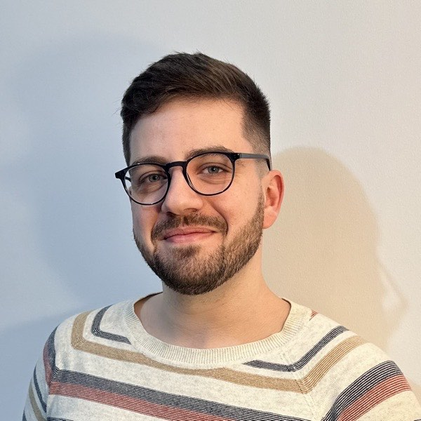

~/coimbra/carlos-pinho on main
Senior software engineer. I build the systems behind the product — these days in C# and .NET, after years of TypeScript and Node — and I enjoy the people side of it as much as the code.

whoami
These days I'm a Senior Software Engineer at Intermedia Intelligent Communications, working mostly in C# and .NET. Before that I was a Lead Software Developer at Imaginary Cloud, helping products grow from early MVPs into real platforms — and the teams along with them.
The part of the job I like most is the middle bit: figuring out what actually needs to be built, sketching out how, and helping the team get it over the line.
git log --oneline --career
feat: join Intermedia Intelligent Communications
Senior Software Engineer · Remote
Working in C# and .NET on a cloud communications platform used by businesses around the world.
promote: Lead Software Developer
Imaginary Cloud · Coimbra, remote
Ran a client project end to end — turning business requirements into technical plans, keeping the backlog in shape, and steering the team through a few hairy production moments.
feat: move to product consultancy
Senior Software Developer · Imaginary Cloud
Architecture for new projects and growth-stage products. Built an integration layer that quietly automated workflows across a bunch of internal systems.
feat: backend microservices for blockchain project
Software Engineer · WIT Software, Coimbra
Node.js microservices at scale, lots of cross-team work, and a first real seat at the table for architecture decisions.
init: first full-time engineering role
Software Developer · WIT Software
Shipped an Apple TV app in React Native and a serverless AWS backend for real-time mobile data — right after an internship building an automated personalized-video pipeline.
initial commit
IT Technician · INOPRINT, Coimbra
Where it started: assembling printers by day, building the company's website with PHP and jQuery by... also day. Everyone starts somewhere.
cat stack.txt
C# · .NET — the current daily drivers. TypeScript · Node.js before that, since 2019.
PostgreSQL · Redis · MySQL. Schema design to query tuning.
AWS · serverless · Docker · microservices. Systems that stay up.
Solution architecture · code review · mentoring · leading teams through ambiguity.
grep -r "carlos" ./colleagues
He is an absolute asset to any engineering team - not just for his individual output, but because he raises the standard for everyone around him.João Cunha — Senior Project Manager, managed Carlos directly
His pragmatism, transparency, and adaptability were absolute crucial of the project's success.João Santos — Tech Lead, worked with Carlos on the same team
That combination of technical curiosity and intellectual humility creates an environment where everyone feels comfortable contributing.João Nabais — Software Developer, reported to Carlos directly
life --no-terminal
Before I was coordinating engineers, I was coordinating musicians. For eight years I played classical guitar and sang in the Estudantina Universitária de Coimbra, and served as vice president of the Fado Section of the Associação Académica de Coimbra. There's plenty of video evidence of the singing years over on YouTube.
In 2019 I directed FESTUNA, the Estudantina's festival — a €15,000 budget, 150+ people, and the first sold-out edition in nearly a decade. Turns out herding musicians and herding engineers are pretty much the same job.